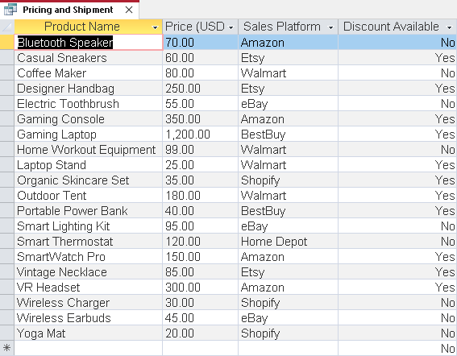
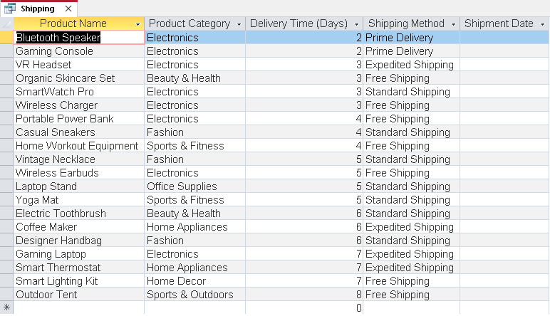
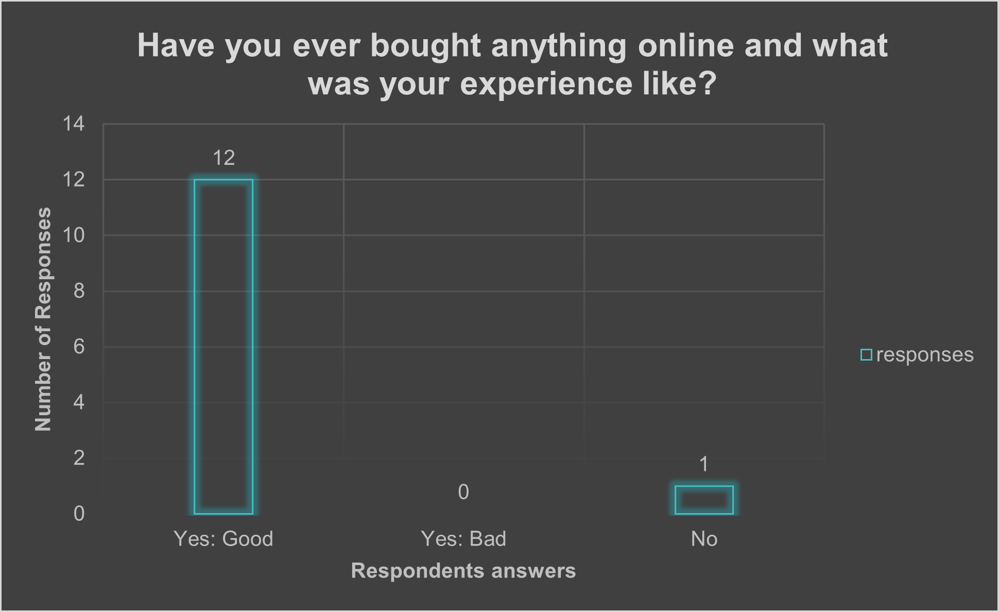
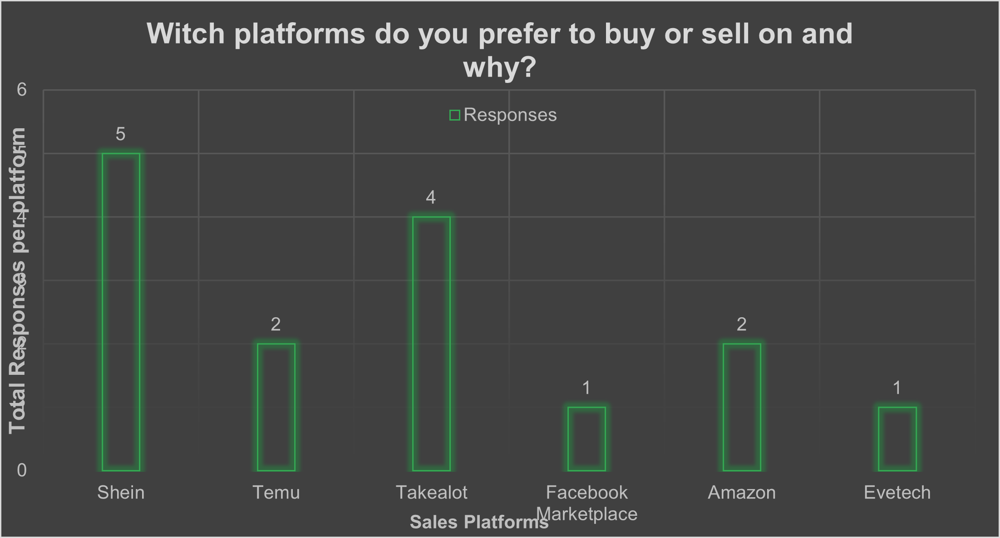

Information Overview
This page provides detailed insights into how technology is reshaping online sales for South African companies. From automation to mobile platforms, the digital shift is redefining customer engagement, logistics, and business growth.
Images of Findings



